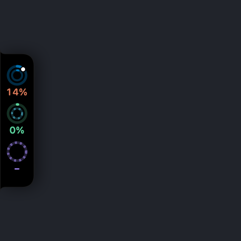

A Gemini CLI quota tracker in the MacBook notch
Notchmeter shows the per-model quota Google meters for Gemini CLI, Gemini Pro, Flash and Flash Lite, and any Claude or GPT model the plan covers, beside the notch, from the same Code Assist endpoints Gemini CLI's own /stats reads, on the Google login Gemini CLI already keeps on your Mac. Since June 2026 Google serves that quota only to Code Assist Standard and Enterprise accounts; a personal account gets a sentence saying so, not a wrong number.
macOS 15 or later · Apple silicon or Intel · no account, ever
What Notchmeter shows for Gemini CLI
Gemini CLI and Antigravity meter against the same Google backend, so they share one ring; this page is the Gemini CLI side of it, and the Antigravity page the other.
- One window per pool, grouped the way Gemini CLI's
/statsgroups them: every Gemini model of a tier sharing one pool, the tightest bucket setting the figure, and the note naming the models that share it or the count left when Google sends one. - Unknown is not untouched: a bucket Google sends no fraction for draws no figure, never 100% left. An explicit 0 is exhausted.
- The reset on every window, as a countdown or an exact time. Google declares no window length for the per-model buckets, so at first a window shows its fraction and its reset and no pace tick; once two consecutive resets about five hours, a day or a week apart have been seen, the length is inferred, said to be (“daily window inferred from its resets”), tagged as an estimate, and the pace tick and projection appear.
- No cost: Google meters quota, not money, and publishes no price and no token count a rate could be applied to, so the Cost card has no row for it, not a $0.
- Sessions: with the Gemini CLI hook, every running session, a tick when a turn ends, and a dot while Gemini CLI waits at a tool permission.

Where each figure comes from
The same internal Code Assist calls Gemini CLI makes at every start, on the login it keeps.
| Figure | Source | Notes |
|---|---|---|
| The per-model buckets | POST …/v1internal:loadCodeAssist for the project and tier, then :retrieveUserQuotaSummary, else :retrieveUserQuota, on daily-cloudcode-pa.googleapis.com or cloudcode-pa.googleapis.com | Undocumented internal calls. With a Gemini CLI login the body says ideType: GEMINI_CLI and the request carries User-Agent: Notchmeter/<version>; a project-scoped refusal is retried project-less before it counts. |
| Which host | The host Antigravity's CLI last logged, else daily first and then the other, keeping the first answer with a live figure | The quota is metered on one of Google's two deployments, and the other answers every bucket untouched with a reset five hours off, whatever has been used; such an answer is shown with no figure and a caption, never as an untouched quota. |
| Window length and pace | Inferred from two consecutive resets that agree with a five-hour, daily or weekly length; a first read only notes the likely length and drives nothing | Low confidence by design: Google's own documentation calls these per-day request limits, so even a confirmed length is labelled inferred. |
| The staleness guard | A window read untouched across three consecutive polls while the hook reported a Gemini CLI turn loses its figure and says it is unverified | Judged by history, never by value, so a first read cannot fire it and a quiet Mac cannot either. |
| Sessions, waits | Gemini CLI's hooks in ~/.gemini/settings.json, through the optional hook command | Its ToolPermission notification starts a wait; Gemini CLI's alert is observability only, so the wait is shown and cannot be answered from the notch. |
The login is ~/.gemini/oauth_creds.json, the Google login Gemini CLI caches after gemini and Login with Google. It is read, never refreshed or written, and sent only to Google as Authorization: Bearer. An API-key or Vertex AI setup has no quota to read, and the card says so.
Since June 2026 Google serves this endpoint only to Code Assist Standard and Enterprise accounts. A personal account gets the sentence “Google stopped serving Gemini CLI quota to personal accounts in June 2026; Code Assist Standard and Enterprise accounts still report it”, and it is reported only after both hosts have refused, so a host that is merely the wrong one is never mistaken for the shutdown. Every rule above is pinned by tests and written down in Antigravity: quota, and no cost.
What it says to do about it
Gemini CLI publishes only per-model windows, so it has no main window; its lines are about the models.
Questions
Which Google accounts still report Gemini CLI quota?
Code Assist Standard and Enterprise accounts. Since June 2026 Google has not served the quota endpoint to personal accounts, and Notchmeter says so in one sentence rather than showing a stale or invented figure. An API-key or Vertex AI setup has no quota to read at all.
Why is there no pace tick on a Gemini CLI meter at first?
Because Google declares no window length for the per-model buckets, only a reset moment, and a pace tick needs a length. Notchmeter infers one only after it has seen two consecutive resets about five hours, a day or a week apart, tags the window as inferred, and only then draws the tick and the projection. A first read notes the likely length and drives nothing.
Does it show a cost for Gemini CLI?
No. Google meters quota, not money: the endpoint returns per-model windows and the fraction of each that is left, no price, and no token count a published rate could be applied to. A Code Assist seat is not billed at Gemini's API rates either, so there is nothing honest to derive, and the Cost card has no row for it rather than a $0.
Why did a meter read untouched while I was using it?
Google meters the quota on one of two deployments, and the other answers every bucket untouched with a reset five hours from the moment it was asked. Notchmeter prefers the host Antigravity's CLI last logged, tries both otherwise, believes the first answer with a live figure, and shows a placeholder answer with no figure and a caption. If a window still reads untouched across three polls while the hook reports your turns, it loses its figure and says it is unverified.
Does it need a separate login?
No. It reads the Google login Gemini CLI caches in ~/.gemini/oauth_creds.json after you run gemini and choose Login with Google. The token is read, never refreshed or written, and sent only to Google's Code Assist endpoints.
Can it answer Gemini CLI's permission prompts from the notch?
No. Gemini CLI's ToolPermission notification is observability only, so Notchmeter shows the wait, the dot on the ring and the notification, and you answer in the terminal. Claude Code, Codex and Copilot CLI document a deciding event and can be answered from the notch; docs/hooks.md says which is which.
Install it
macOS 15 Sequoia or later, Apple silicon or Intel. Signed, notarised, and it updates itself. Free forever, MIT licensed.
Notchmeter is a Mac app. There is no Windows or Linux version; if you want a Windows one, the Windows issue is where to say so. How every figure is built, with its source and its date: docs/accuracy.md.